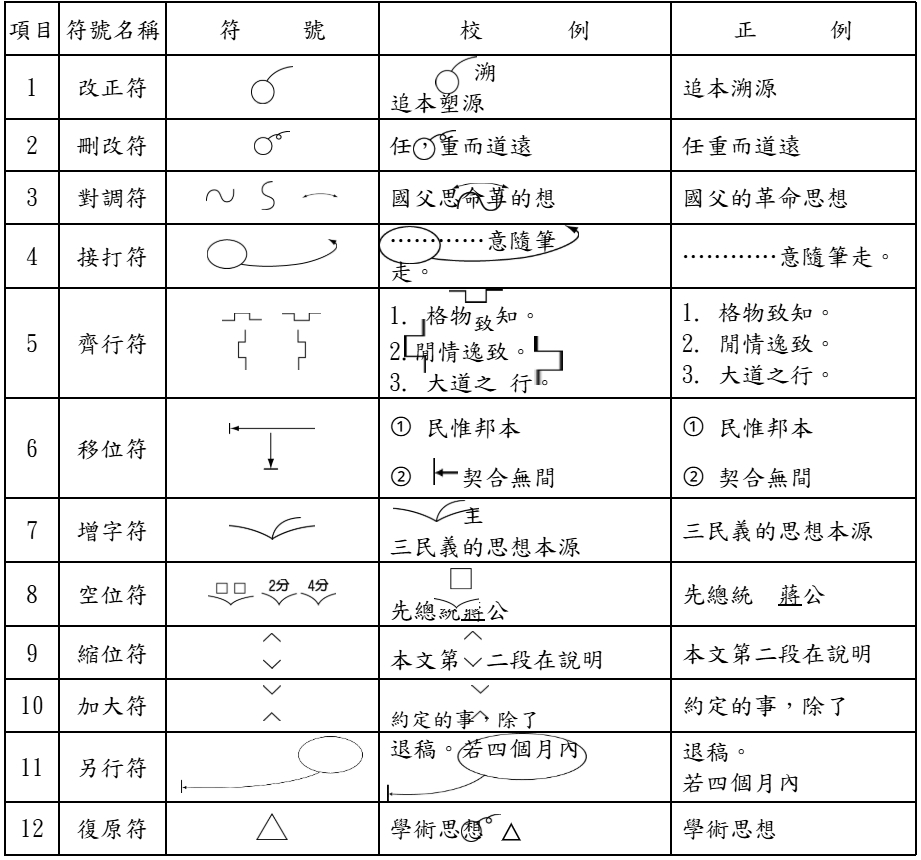
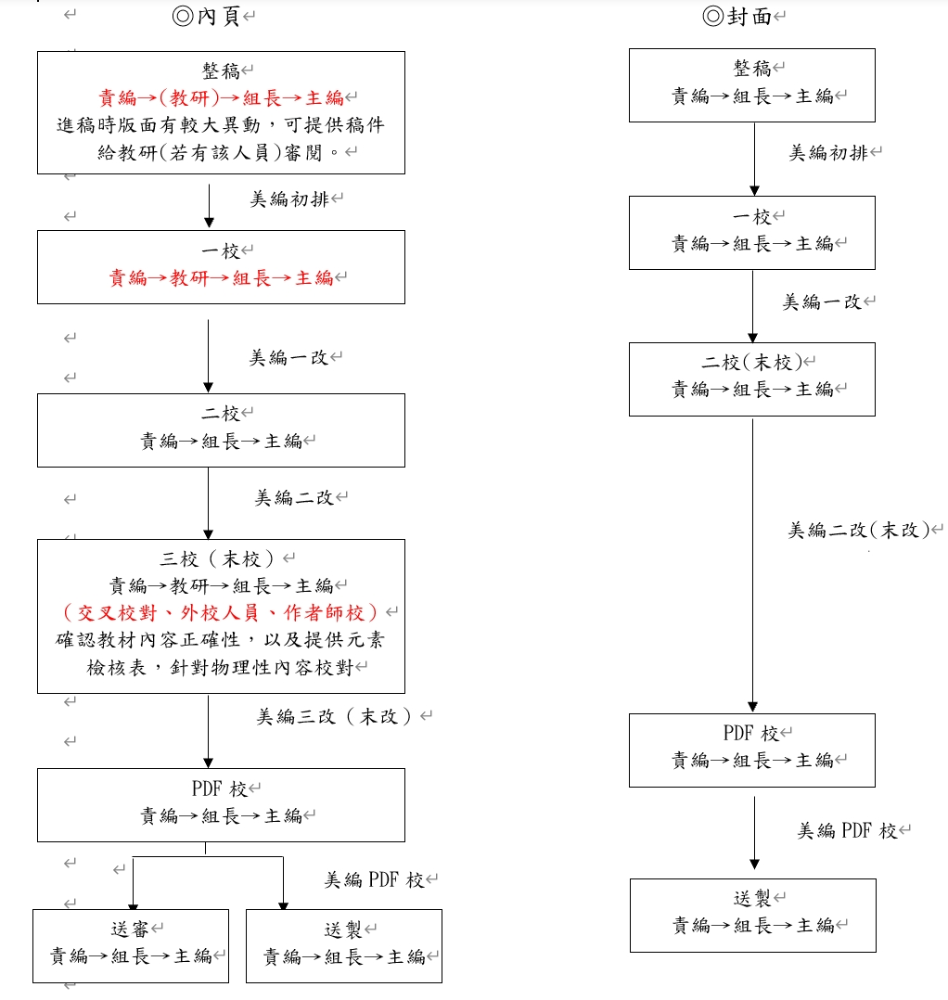
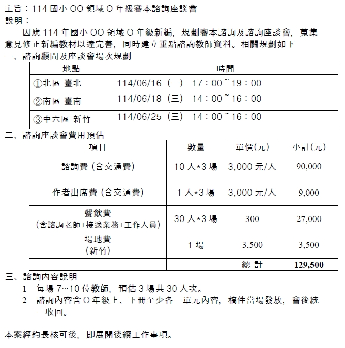
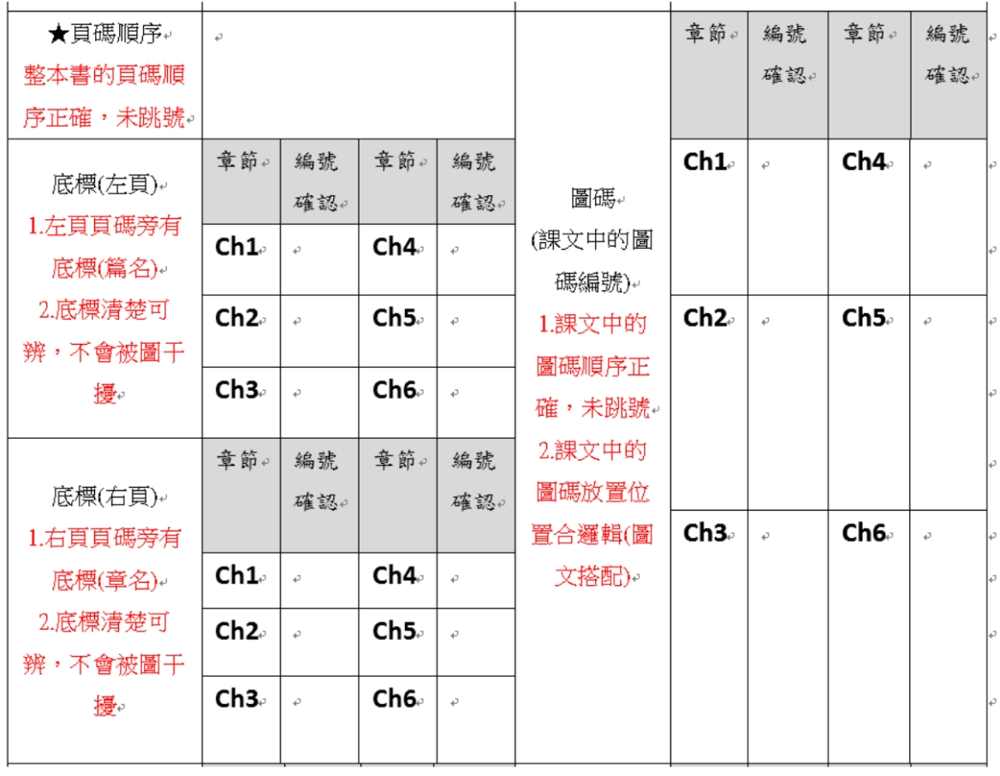
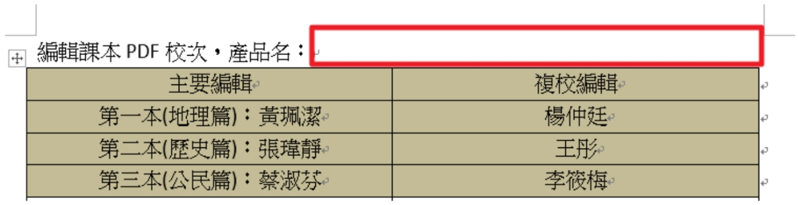
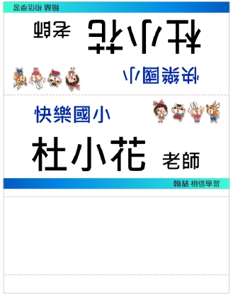
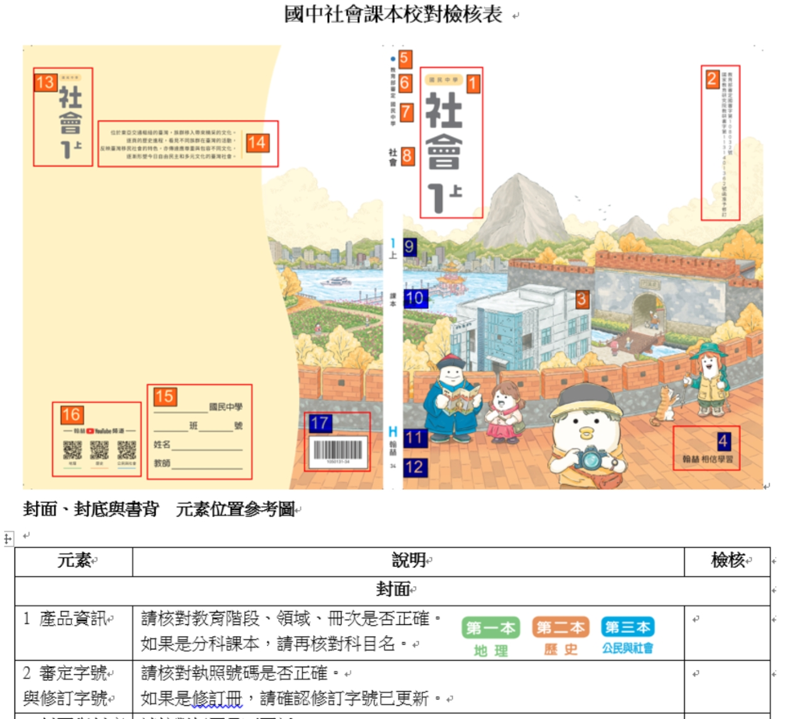
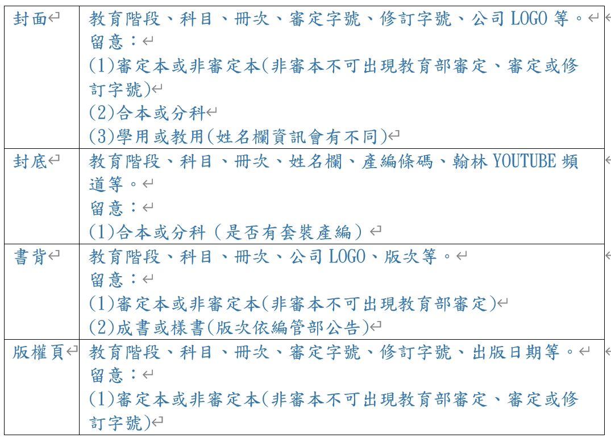

諮詢會議（多人會議或1對1訪談）
諮詢會議工作流程
1. 目的
為讓所研發的教材能符合老師教學，適合學生學習，特舉辦諮詢會議，提供作者團隊諮詢意見，致使教材品質更臻完善，特制定本辦法。
2. 適用範圍
小、中、高教科書研發。
3. 職責
- 領域負責審本諮詢活動規劃執行；企劃負責成書諮詢活動規劃執行；行銷處配合諮詢老師協尋及活動支援。
- 教研、數位企劃、美編配合參與會議。
4. 作業程序
- 諮詢對象：諮詢老師是指編撰團隊以外的人士。
- 諮詢目的：提供意見給編撰團隊、文編、美編、企劃、教研、數位及領域經理人，作為編修教材的參考。
- 諮詢老師來源：
- 對自然教學頗有研究及熱心，若具有輔導團或為該校領域召集人的資格更佳。
- 為諮詢座談或諮詢本而邀約之老師，費用按場次給付及以件計酬制。
- 諮詢老師應適時檢視並進行增補或汰換，以更換新血來帶動新鮮概念活化組織。諮詢老師出席座談會卻沒提供有建設性意見或態度消極，應註記於諮詢名單中，並通知該區區經理不再邀約。
- 為顧及諮詢會議品質，諮詢會議參與諮詢老師，應至少5位以上。
- 諮詢作業階段 (依時間軸) ：
- 開編階段(出版前)→新編或修訂之送審冊次課程架構諮詢(依各領域需求進行)。
- 編撰階段(出版前)→蒐集教師對審本定稿後之教材意見，針對知識正確性、課文敘述邏輯性、圖照合適性、是否符合課綱等給予意見。
- 定稿諮詢：送審前諮詢。
- 審本諮詢：各審次審本諮詢(依各領域需求進行)。
- 成書階段(出版後)→成書諮詢：教材上市後教師實際使用的教材意見蒐集及記錄。
- 「諮詢作業階段一覽表」(附件一)
 圖 14-1：諮詢作業階段一覽表(附件一) - 執行作業事項：
- 由負責單位與行銷處確認座談會的場次、地點和時間。
- 確認各場次參與人員及出席老師。
- 由負責單位提報諮詢規劃書(附件二、附件三)，經過簽呈核准後推動執行。
- 會前準備：詳細內容可參考工作分工一覽表(附件四)、諮詢會議工作流程圖(附件五)
- 確認舉辦場次及時間
- 確認舉辦場次及時間
- 確認出席名單
- 製作桌名牌(附件六)
- 製作迎賓海報(附件七)
- 製作諮詢費收據(附件八)
- 預支諮詢會議費用(含諮詢費、餐點及場地費)
- 預定場地及餐點(發票或合格收據，須打統編)
- 確認交通事宜
- 準備諮詢稿件(諮詢本、現行版教科書等)
- 會議執行及注意事項：詳細內容可參考工作分工一覽表(附件四)、諮詢會議工作流程圖(附件五)
- 布置場地及安排座位
- 確認投影設備
- 點收及發放餐點
- 檢查諮詢費收據填寫資料是否詳備(地址含鄰里)
- 由負責單位記錄會議內容(含意見提供者姓名)
- 主持人須引導各諮詢老師發言
- 會議後：
- 諮詢資料回收(含問卷回收)
- 場地恢復
- 彙整會議紀錄並提供相關人員
- 核銷各場次之費用
 圖 14-2：提報諮詢規劃書(附件二)  圖 14-3：提報諮詢規劃書(附件三)  圖 14-4：工作分工一覽表(附件四)  圖 14-5：諮詢會議工作流程圖(附件五)  圖 14-6：桌名牌-1(附件六)  圖 14-7：桌名牌-2(附件六)  圖 14-8：諮詢費收據(附件八) 
圖 14-9：諮詢費收據(附件八) 圖 14-4：工作分工一覽表(附件四) 圖 14-5：諮詢會議工作流程圖(附件五)